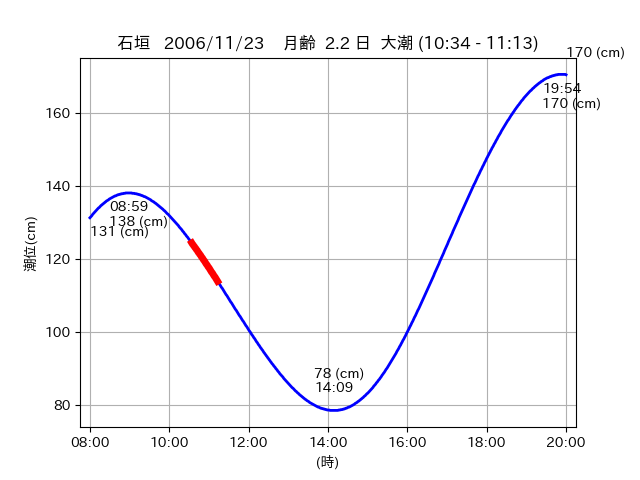

<!DOCTYPE html>
<html>
<head>
    
    <meta http-equiv="content-type" content="text/html; charset=UTF-8" />
    
        <script>
            L_NO_TOUCH = false;
            L_DISABLE_3D = false;
        </script>
    
    <style>html, body {width: 100%;height: 100%;margin: 0;padding: 0;}</style>
    <style>#map {position:absolute;top:0;bottom:0;right:0;left:0;}</style>
    <script src="https://cdn.jsdelivr.net/npm/leaflet@1.9.3/dist/leaflet.js"></script>
    <script src="https://code.jquery.com/jquery-3.7.1.min.js"></script>
    <script src="https://cdn.jsdelivr.net/npm/bootstrap@5.2.2/dist/js/bootstrap.bundle.min.js"></script>
    <script src="https://cdnjs.cloudflare.com/ajax/libs/Leaflet.awesome-markers/2.0.2/leaflet.awesome-markers.js"></script>
    <link rel="stylesheet" href="https://cdn.jsdelivr.net/npm/leaflet@1.9.3/dist/leaflet.css"/>
    <link rel="stylesheet" href="https://cdn.jsdelivr.net/npm/bootstrap@5.2.2/dist/css/bootstrap.min.css"/>
    <link rel="stylesheet" href="https://netdna.bootstrapcdn.com/bootstrap/3.0.0/css/bootstrap-glyphicons.css"/>
    <link rel="stylesheet" href="https://cdn.jsdelivr.net/npm/@fortawesome/fontawesome-free@6.2.0/css/all.min.css"/>
    <link rel="stylesheet" href="https://cdnjs.cloudflare.com/ajax/libs/Leaflet.awesome-markers/2.0.2/leaflet.awesome-markers.css"/>
    <link rel="stylesheet" href="https://cdn.jsdelivr.net/gh/python-visualization/folium/folium/templates/leaflet.awesome.rotate.min.css"/>
    
            <meta name="viewport" content="width=device-width,
                initial-scale=1.0, maximum-scale=1.0, user-scalable=no" />
            <style>
                #map_61c5ff56301bc9b332002367817b8c47 {
                    position: relative;
                    width: 2048.0px;
                    height: 1600.0px;
                    left: 0.0%;
                    top: 0.0%;
                }
                .leaflet-container { font-size: 1rem; }
            </style>
        
</head>
<body>
    
    
            <div class="folium-map" id="map_61c5ff56301bc9b332002367817b8c47" ></div>
        
</body>
<script>
    
    
            var map_61c5ff56301bc9b332002367817b8c47 = L.map(
                "map_61c5ff56301bc9b332002367817b8c47",
                {
                    center: [24.289, 124.159],
                    crs: L.CRS.EPSG3857,
                    ...{
  "zoom": 12,
  "zoomControl": true,
  "preferCanvas": false,
}

                }
            );

            

        
    
            var tile_layer_0a5632c1d7c7da1d57b48e9937fef511 = L.tileLayer(
                "https://cyberjapandata.gsi.go.jp/xyz/seamlessphoto/{z}/{x}/{y}.jpg",
                {
  "minZoom": 0,
  "maxZoom": 18,
  "maxNativeZoom": 18,
  "noWrap": false,
  "attribution": "\u5730\u7406\u9662\u5730\u56f3",
  "subdomains": "abc",
  "detectRetina": false,
  "tms": false,
  "opacity": 1,
}

            );
        
    
            tile_layer_0a5632c1d7c7da1d57b48e9937fef511.addTo(map_61c5ff56301bc9b332002367817b8c47);
        
    
            var marker_c12497c41d6dd0a265801263c46df581 = L.marker(
                [24.2319, 124.046],
                {
}
            ).addTo(map_61c5ff56301bc9b332002367817b8c47);
        
    
            var icon_8f39fc1ad2fb8c42c3758370c5ab6697 = L.AwesomeMarkers.icon(
                {
  "markerColor": "orange",
  "iconColor": "white",
  "icon": "info-sign",
  "prefix": "glyphicon",
  "extraClasses": "fa-rotate-0",
}
            );
        
    
        var popup_9e3b725d6c374f7ab474db3684a975fa = L.popup({
  "maxWidth": "100%",
});

        
            
                var html_8da7681c7061b1d4c66c1a29872ed5ec = $(`<div id="html_8da7681c7061b1d4c66c1a29872ed5ec" style="width: 100.0%; height: 100.0%;"><table><tr><td></td></tr><tr><td><center>20061123 No.1 </center></table></td></tr></table</div>`)[0];
                popup_9e3b725d6c374f7ab474db3684a975fa.setContent(html_8da7681c7061b1d4c66c1a29872ed5ec);
            
        

        marker_c12497c41d6dd0a265801263c46df581.bindPopup(popup_9e3b725d6c374f7ab474db3684a975fa)
        ;

        
    
    
                marker_c12497c41d6dd0a265801263c46df581.setIcon(icon_8f39fc1ad2fb8c42c3758370c5ab6697);
            
    
            var poly_line_832dce06374500867e615a50fc88d537 = L.polyline(
                [[24.2319, 124.046], [24.2323, 124.0489]],
                {"bubblingMouseEvents": true, "color": "#FF00FF", "dashArray": null, "dashOffset": null, "fill": false, "fillColor": "#FF00FF", "fillOpacity": 0.2, "fillRule": "evenodd", "lineCap": "round", "lineJoin": "round", "noClip": false, "opacity": 1.0, "smoothFactor": 1.0, "stroke": true, "weight": 3}
            ).addTo(map_61c5ff56301bc9b332002367817b8c47);
        
    
            var marker_2aafe838951b00e9440ff2b256d66aa9 = L.marker(
                [24.2446, 124.1074],
                {
}
            ).addTo(map_61c5ff56301bc9b332002367817b8c47);
        
    
            var icon_fddfaffcad2a0dbea0e3158977e11118 = L.AwesomeMarkers.icon(
                {
  "markerColor": "blue",
  "iconColor": "white",
  "icon": "info-sign",
  "prefix": "glyphicon",
  "extraClasses": "fa-rotate-0",
}
            );
        
    
        var popup_08b200ecbafbd0eb1b1ad58478099254 = L.popup({
  "maxWidth": "100%",
});

        
            
                var html_e7ac9faf7a4d057cc4edf0990daf5812 = $(`<div id="html_e7ac9faf7a4d057cc4edf0990daf5812" style="width: 100.0%; height: 100.0%;"><table><tr><td></td></tr><tr><td><center>20061123 No.2 </center></table></td></tr></table</div>`)[0];
                popup_08b200ecbafbd0eb1b1ad58478099254.setContent(html_e7ac9faf7a4d057cc4edf0990daf5812);
            
        

        marker_2aafe838951b00e9440ff2b256d66aa9.bindPopup(popup_08b200ecbafbd0eb1b1ad58478099254)
        ;

        
    
    
                marker_2aafe838951b00e9440ff2b256d66aa9.setIcon(icon_fddfaffcad2a0dbea0e3158977e11118);
            
    
            var marker_92a0d49590881ace0a8cc65c3f2aaee6 = L.marker(
                [24.2863, 124.1578],
                {
}
            ).addTo(map_61c5ff56301bc9b332002367817b8c47);
        
    
            var icon_22bab0aedcae6738782271c50359e46a = L.AwesomeMarkers.icon(
                {
  "markerColor": "orange",
  "iconColor": "white",
  "icon": "info-sign",
  "prefix": "glyphicon",
  "extraClasses": "fa-rotate-0",
}
            );
        
    
        var popup_56464d3626ba691bcf54371506fd9e74 = L.popup({
  "maxWidth": "100%",
});

        
            
                var html_bf315c74bc31523673e6300866ff3a0d = $(`<div id="html_bf315c74bc31523673e6300866ff3a0d" style="width: 100.0%; height: 100.0%;"><table><tr><td></td></tr><tr><td><center>20061123 No.3 </center></table></td></tr></table</div>`)[0];
                popup_56464d3626ba691bcf54371506fd9e74.setContent(html_bf315c74bc31523673e6300866ff3a0d);
            
        

        marker_92a0d49590881ace0a8cc65c3f2aaee6.bindPopup(popup_56464d3626ba691bcf54371506fd9e74)
        ;

        
    
    
                marker_92a0d49590881ace0a8cc65c3f2aaee6.setIcon(icon_22bab0aedcae6738782271c50359e46a);
            
    
            var poly_line_f56a38c8a43546ce7b9449ede3f33425 = L.polyline(
                [[24.2863, 124.1578], [24.2913, 124.1592]],
                {"bubblingMouseEvents": true, "color": "#FF00FF", "dashArray": null, "dashOffset": null, "fill": false, "fillColor": "#FF00FF", "fillOpacity": 0.2, "fillRule": "evenodd", "lineCap": "round", "lineJoin": "round", "noClip": false, "opacity": 1.0, "smoothFactor": 1.0, "stroke": true, "weight": 3}
            ).addTo(map_61c5ff56301bc9b332002367817b8c47);
        
</script>
</html>